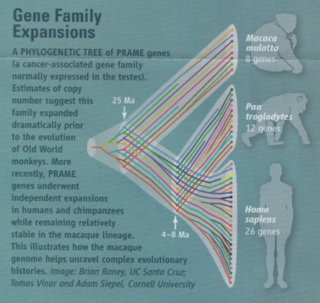

| Evolution in the News - May 2007 |
| by Do-While Jones |
The Rhesus Macaque monkey's DNA has been sequenced, and it is no surprise that the publicly disseminated numbers show just what the evolutionists want to show.
According to the popular press,
|
Of the macaque's nearly 3 billion DNA base pairs, 93.5 per cent are identical to those in the human genome. This is not unexpected for a species whose lineage diverged from our own about 25 million years ago. The human and chimp genomes, which diverged just 6 million years ago, are about 98 per cent identical. 1 |
The real story is in the 31-page special section of the 13 April, 2007, issue of Science. What the research article actually said was,
|
Nucleotide sequences that aligned between the human and rhesus average 93.54% identity. If, however, small insertions and deletions are included in the calculation, identity is reduced to 90.76%. Considering regions that are difficult to align, such as lineage-specific interspersed repeat elements, would further decrease the level of computed identity. Moreover, evolutionary distances exhibit local fluctuations, as in other mammals, and less divergence was observed in chromosome X (94.26% identity of aligned bases). The GC-content of the rhesus in aligned bases was not notably lower than that of the human (40.71% versus 40.74%). 2 |
Of course, to get that result they used the same kind of selective comparison (comparing just those parts that are similar enough to align) that we described in detail in previous essays. 3 Not wanting to repeat what we wrote in those essays, we used similar analytical techniques to show that the first chapter of Darwin's Origin of Species is only 5 per cent different from the first chapter of the Bible. Although that analysis was silly, it wasn't funny, so we decided not to bore you with it.
Later, the Science article says,
|
Similarly, 89% of human-macaque orthologs differ at the amino acid level, as compared with only 71% of human-chimpanzee orthologs. 4 |
If 89% differ, that means only 11% are the same. At the amino acid level, we are only 29% the same as a chimp. You can get any number you want simply by picking what you want to compare.
The macaque genome is important because,
|
All told, [medical] researchers publish about 2,000 papers a year on macaques, with publicly funded researchers conducting studies on about 40,000 animals and drug companies, many more. ... The average 3% difference between macaque and human genes means that for some genes the macaque sequence may be invisible to a human-based microarray. 5 |
By comparing the human, chimp, and macaque genomes, medical researchers can learn more about the relationship between genetics and diseases, which naturally leads to improved medical treatments. So, in the misguided attempt to figure out how man evolved, scientists are likely to discover things that are medically useful.
Part of the special fold-out for the 13 April 2007 issue of Science showed this diagram.
|
 |
The idea behind the picture is that if humans have a gene, and macaques have an identical gene, but the chimp's equivalent gene is slightly different, then there must be an evolutionary advantage to the chimp's variation. But what the picture really shows is how different the number of genes really are, and how random chance would have had to have added information to the genomes of all three species if evolution were true. Look at all the places in the diagram where one gene branches out into two. Each one of those branches is a scientifically implausible miracle. This diagram actually shows how impossible evolution is.
| Quick links to | |
|---|---|
| Science Against Evolution Home Page |
Back issues of Disclosure (our newsletter) |
| Web Site of the Month |
Topical Index |
Footnotes:
1
New Scientist, 21 April 2007, "Monkey genome springs surprise for human origins", page 15, https://www.newscientist.com/article/mg19426005-400-monkey-genome-springs-surprise-for-human-origins/
2
Science, Vol. 316, 13 April 2007, "Evolutionary and Biomedical Insights from the Rhesus Macaque Genome" page 223, https://www.science.org/doi/10.1126/science.1139247
3
Disclosure, October 2005, "Chimps are Like Us"
Disclosure, January 2003, "98% Chimp"
Disclosure, January 2003, "Monkey Business"
Disclosure, September 2003, "More Monkey Business"
4
Science, Vol. 316, 13 April 2007, "Evolutionary and Biomedical Insights from the Rhesus Macaque Genome" page 223, https://www.science.org/doi/10.1126/science.1139247
5
Science, Vol. 316, 13 April 2007, "Boom Time for Monkey Research", https://www.science.org/doi/10.1126/science.316.5822.216